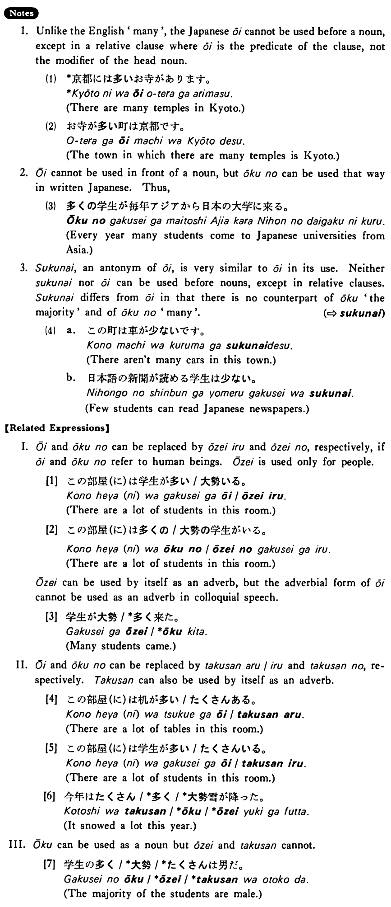

多い・おおい (B. 354)
- (ks).
- 日本（に）は大学が多い・多いです。
- In Japan universities are many.
- (a).
- 京都（に）はお寺が多いです。
- There are many temples in Kyoto.
- (b).
- ロスさんの作文（に）は間違いが多いです。
- There are many mistakes in Mr. Ross's compositions.
- (c).
- 一月（に）は雪が多い。
- There is a lot of snow in January.
